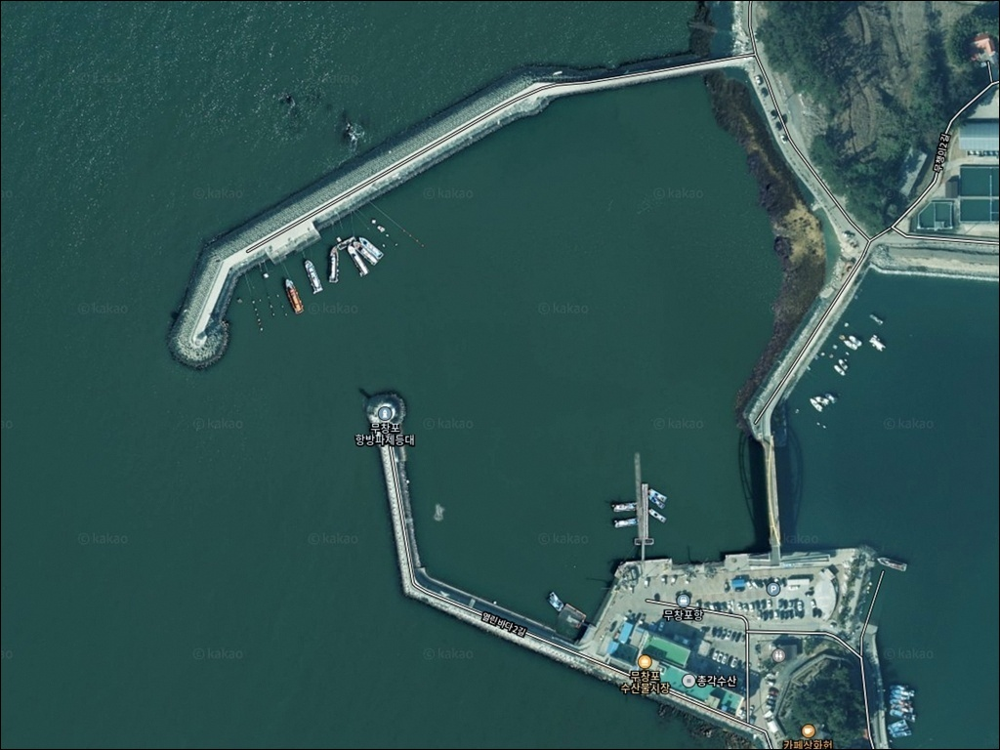
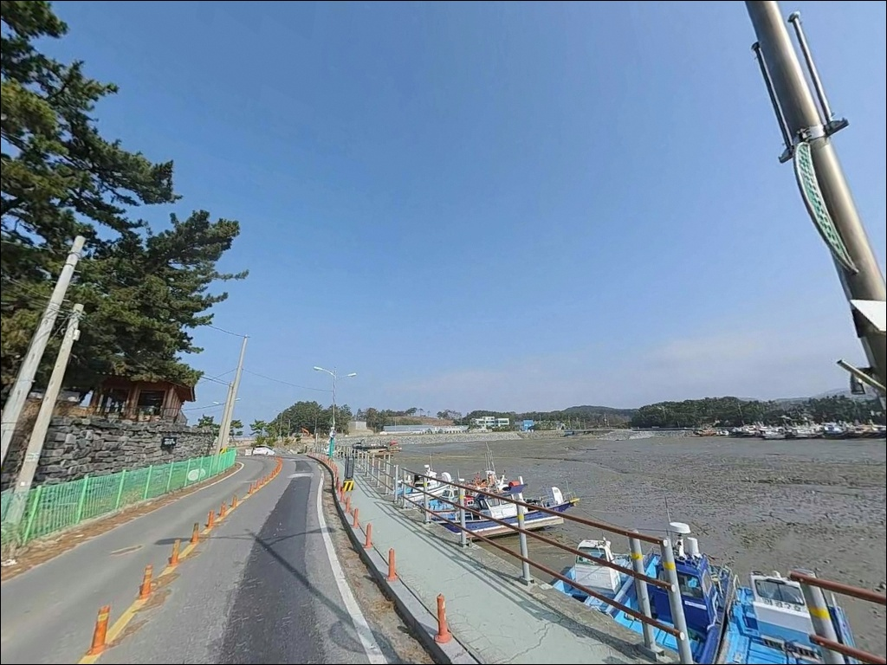
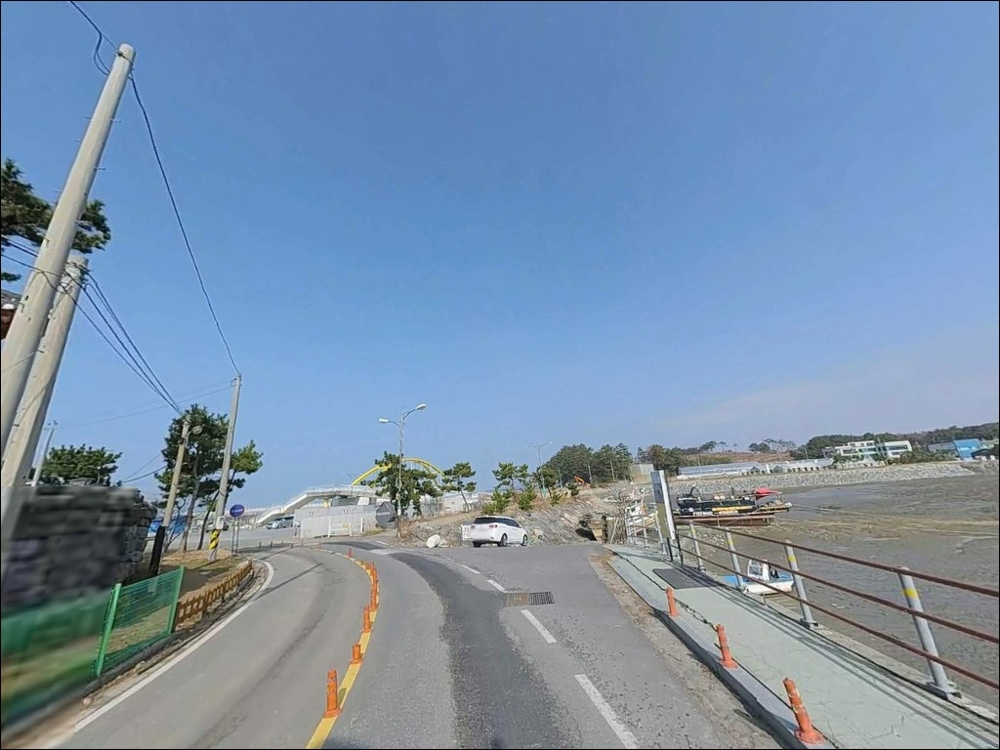
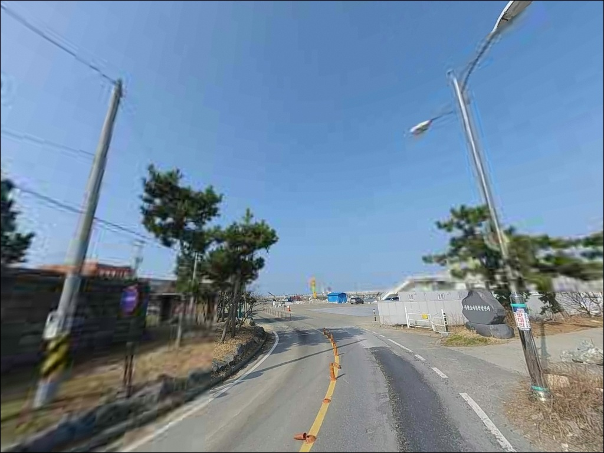
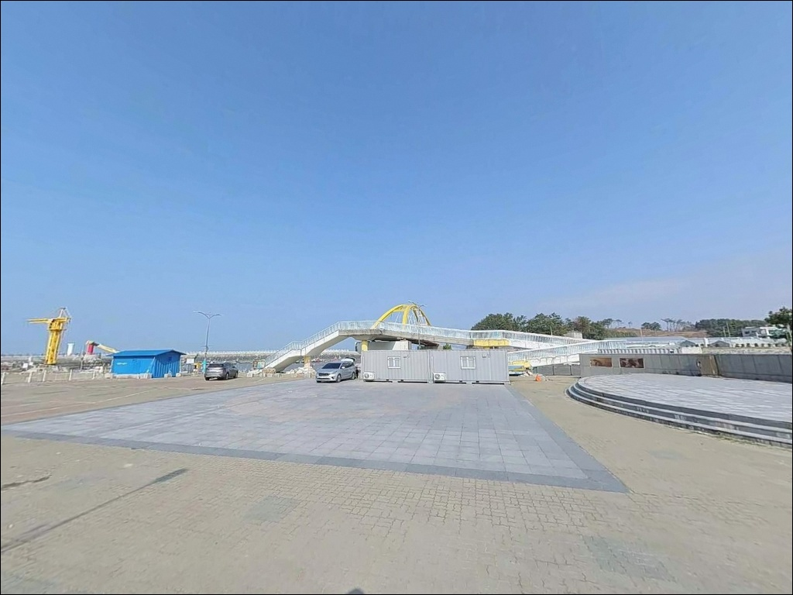
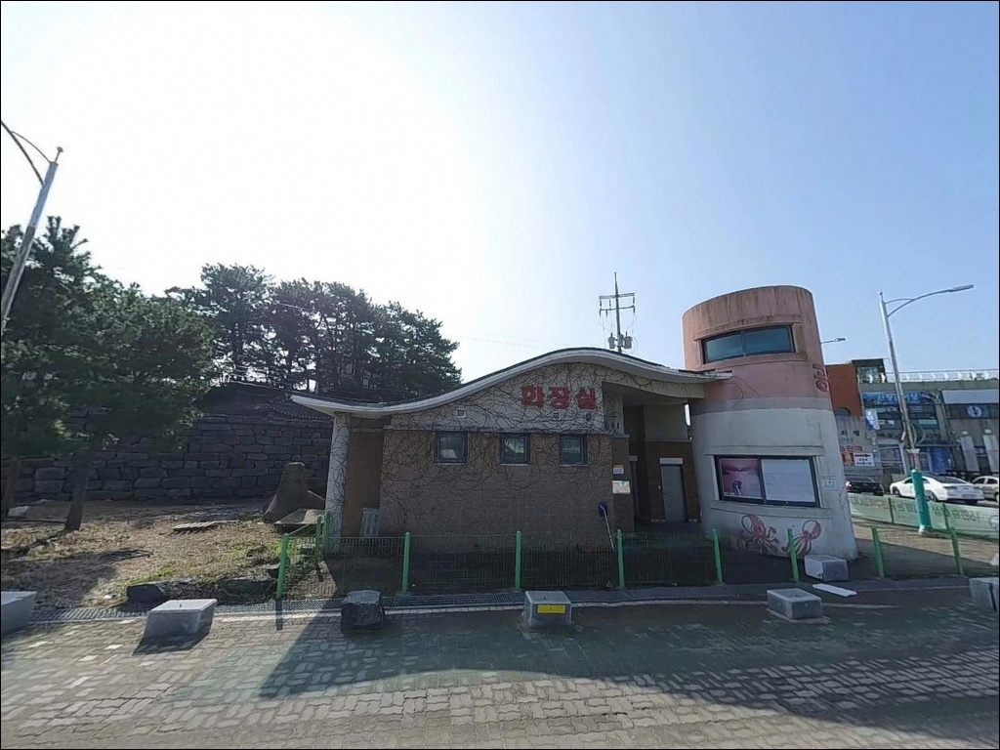
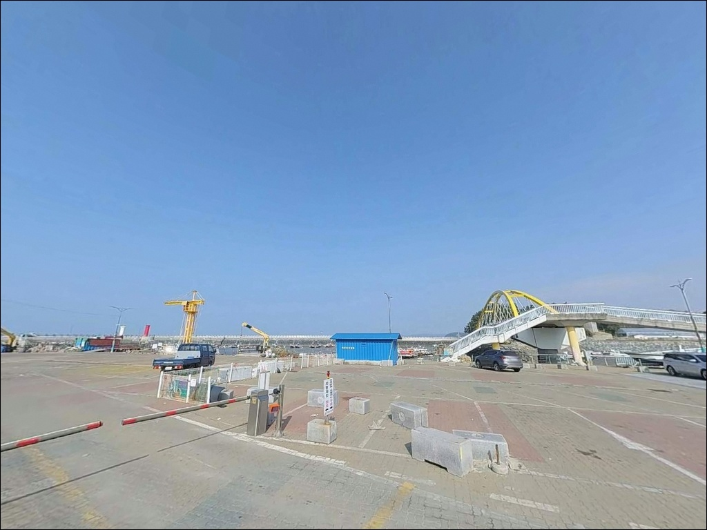
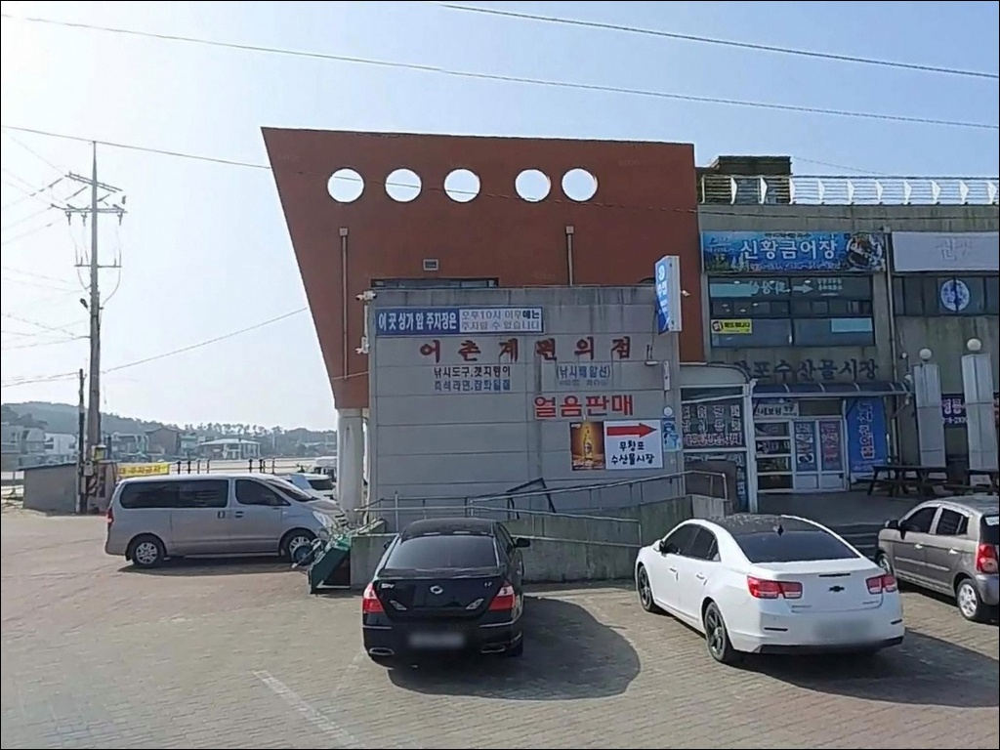
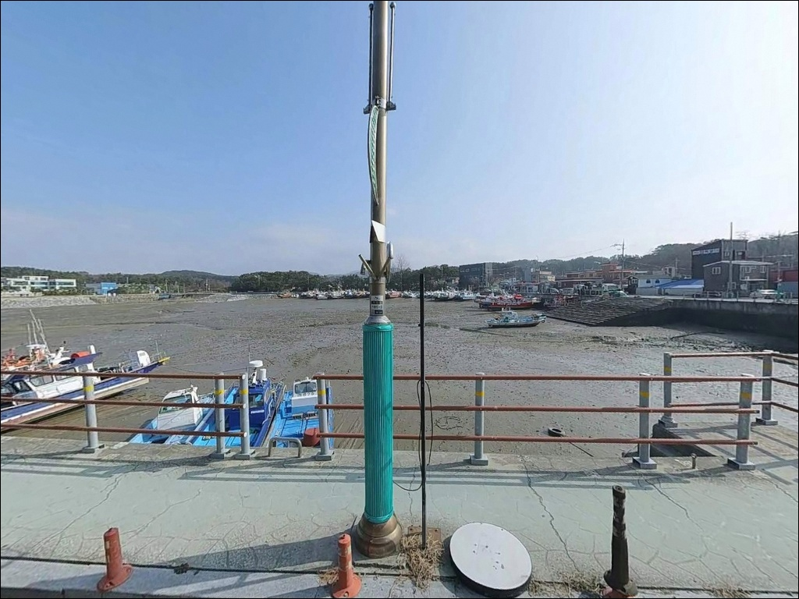

무창포항, 충남 보령시 한적한 분위기 속 차박, 낚시를 함께 하기 좋은 곳
이 페이지에는 광고(제휴 링크 포함)가 있으며, 광고 링크를 통해 구매하면 운영자가 판매 수익 또는 수수료를 받을 수 있습니다. 포인트 사진: 카카오맵 스카이뷰·로드뷰. 이 페이지의 지도·사진 이미지는 카카오맵의 실제 서비스 이미지와 다를 수 있습니다.


포인트 안내
무창포항
충남 보령시 웅천읍 관당리 888-57
무창포항에서 가장 자주 발생하는 실수는
서해 물때를 확인하지 않고
외항 방파제 끝단에 자리를 잡는 것입니다.
사리 전후 강한 조류 구간에서는
봉돌을 무겁게 달아도
채비가 바닥을 잡기 어려운 상황이
반복됩니다.
2017년 국가어항으로 승격된 보령시 대표 어항으로,
신방파제·구방파제·해안 제방·선착장으로 구성된
복합 지형 위에서
원투낚시, 에깅, 루어, 선상낚시가
모두 가능한 구조를 갖추고 있습니다.
방파제 낚시와 선상낚시를 동일 거점에서
선택할 수 있는 서해 보령권 대표 어항입니다.
이 글은 무창포항의 진입 동선, 차박 여건,
물때 판단 기준,
낚시 스타일별 공략 조건에 집중합니다.
조황 단정이나 특정 어종 보장은
이 글의 범위에 포함되지 않습니다.

1. 진입 동선과 포인트 접근성
무창포항은 서해안고속도로 무창포IC에서
지방도를 통해 접근하는 경로가 일반적입니다.
IC에서 항까지의 거리가 가까운 편이고
진입로 대부분이 포장도로라
차량 진입 자체에 큰 어려움은 없습니다.
관광어항으로 정비된 항구라
도로 폭도 일반 승용차 이상 차량이
진입하는 데 무리 없는 수준입니다.
항 내부는 신방파제·구방파제·해안 제방·선착장으로 구성되어 있으며,
방파제를 연결하는 내부 도로에서 차량 회차가 가능합니다.
낚시 자리에 따라 접근 동선을 달리 잡을 수 있어
이동 자체는 수월한 편입니다.
주차는 항 내부 공간과
무창포해수욕장 주차장을 활용하는 방식이 일반적입니다.
성수기·주말에는 관광객 차량이 집중되므로
이른 시간 진입이 유리합니다.
주차 가능 구역은 현장 표지판을 먼저 확인하는 것이
기본입니다.

2. 차박 환경과 야간 체류 여건
무창포항은 관광어항 특성상
수산시장·어촌시설·상가가 항 주변에 함께 위치합니다.
야간에도 항구 시설 조명이 어느 정도 유지되는 구조지만,
방파제 끝단이나 외항 쪽은
조명이 닿지 않는 구역이 있어
개인 조명 장비는 필수입니다.
낚시를 마치고 차에서 하룻밤 머무는
단기 대기형 차박 용도로는
항 주변 공간을 활용할 수 있습니다.
다만 관광지와 맞닿아 있어
성수기 주말에는 차량 통행이 잦고
소음이 있는 편입니다.
조용한 체류를 원한다면
비수기 평일 방문이 현실적인 조건입니다.
무창포 어촌체험마을 오토캠핑장이
항 인근에 있는 것으로 소개됩니다.
차박 대신 정식 캠핑장 이용을 고려한다면
운영 여부와 이용 조건을 방문 전에 직접 확인하는 것이 좋습니다.


3. 주변 편의시설 및 인프라 현황
무창포항은 편의시설 접근성이
서해 방파제 포인트 중에서 유리한 편입니다.
항과 바로 인접한 무창포 수산물시장에는
1층 직판장과 2층 식당이 운영됩니다.
봄에는 주꾸미·갑오징어·도다리·낙지,
가을에는 전어·꽃게·대하·갑오징어 등이 판매되는 곳으로,
낚시 후 현장에서 바로 식사를
해결할 수 있는 구조입니다.
무창포해수욕장 상권이 항과 인접해 있어
식당·카페·숙박업소 이용이 가능합니다.
낚시 소품과 채비는
현장에서 즉시 구하기 어려울 수 있으므로
출발 전에 갖춰 오는 것이 안전합니다.
응급 상황 발생 시에는
웅천읍 방면 의료·행정 시설을 이용할 수 있습니다.

4. 진입 전 반드시 챙겨야 할 준비사항
서해 방파제 낚시에서 물때 확인은
선택이 아닙니다.
보령 해역은 조수간만의 차가 크고
사리 전후에는 외항 방파제 끝단에서
조류가 강하게 흐릅니다.
바다타임에서 보령 기준 물때를 확인하고
조금 전후나 정조 타이밍을 기준으로
출발 시각을 잡는 것이 기본 전략입니다.
무창포항 방파제에는 테트라포드 구간이 있습니다.
테트라포드 위는 야간에 미끄럼 사고 위험이 높으니
발판이 안정된 석축이나 방파제 본 구간을
이용하는 것이 좋습니다.
구명조끼는 방파제 낚시의 기본 안전 장비이며,
야간 출조 전 착용 여부를 반드시 확인해야 합니다.
서해는 기상 변화가 빠른 편입니다.
출발 당일 아침 해상 예보를 다시 확인하고
바람 방향과 파도 높이를 체크한 뒤 진입하는 것이
포인트 낭비를 막는 조건입니다.
여분 채비는 넉넉하게 준비하는 편이 좋습니다.

5. 지형을 알면 자리 선택이 달라지는 구조
무창포항은 신방파제·구방파제·해안 제방·선착장이
함께 구성된 복합 지형입니다.
신방파제는 외해 쪽으로 길게 뻗어 있어
조류 영향을 직접 받는 구조이며,
방파제 끝단으로 갈수록 수심이 깊어지는 편입니다.
바닥은 펄과 모래가 혼합된 서해 전형적인 저질 구조로,
구간에 따라
수중여와 돌이 발달한 곳이 있어
밑걸림 가능성이 있습니다.
외항 방파제 끝단은 조류 변화가 커
물때 판단 없이 입장하면 채비 컨트롤이 어려운 자리입니다.
반면 내항 쪽은 잔잔한 석축과 선착장 구조라
조류 영향이 상대적으로 적어
찌낚시나 가벼운 루어 채비를 운용하기에
안정적인 환경입니다.
서해 특성상 만조와 간조 사이 수심 차이가
크게 나타나는 포인트입니다.
물때에 따라 발판 상황과 낚시 가능 구간이 달라지므로,
최신 조황은 출조 전 반드시 검색해 보시기 바랍니다.


6. 포인트에 어울리는 낚시 스타일
외항 방파제 끝단은 조류 흐름이 살아 있어
원투낚시 자리로 유리한 구조입니다.
봉돌을 멀리 던진 뒤 바닥을 탐색하는 방식으로
붕장어·도다리·농어를 기대해 볼 수 있으며,
정조 타이밍에 집중하면
채비 컨트롤이 수월해집니다.
에깅은 9~10월 가을 시즌에
이 포인트 지형과 잘 맞는 스타일입니다.
방파제 주변과 테트라포드 경계 구간을 중심으로
에기를 운용하면서
주꾸미와 갑오징어를 노립니다.
에기는 천천히 폴링시켜
바닥층을 탐색하는 것이 기본입니다.
테트라포드 주변에서는
지그헤드와 웜 조합의 루어낚시가 잘 어울립니다.
우럭과 노래미가 테트라 사이에 서식하기 좋은 지형이라
가벼운 채비로 천천히 바닥을 훑는 방식이 유효하며,
야간에는 볼락 라이트게임으로 전환하는 것도
이 포인트에서 선택할 수 있는 방식입니다.
선상낚시는 무창포항의 핵심 낚시 형태입니다.
항 내에 다수의 낚시선 업체가 운영되며,
우럭·광어·갑오징어·문어·농어 등
다양한 어종을 대상으로 출조가 이루어집니다.
방파제 여건이 좋지 않을 때 선상으로 전환할 수 있어
이 항구를 효율적으로 활용하는 방법 중 하나입니다.

7. 대안 포인트와 플랜 B 동선
무창포항 방파제 여건이 여의치 않을 때
첫 번째 대안은 항 내 포인트 이동입니다.
신방파제에서 구방파제로,
또는 해안 제방 구간으로 자리를 옮기면
조류 방향과 수심 여건이 달라집니다.
이동 간격을 짧게 가져가는 방식이
이 항구에서 낚시를 이어가는 기본 전략입니다.
대천항은 무창포에서 북쪽으로 10km 이내에 있는
보령권 대형 선상낚시 거점항입니다.
낚시선 인프라가 더 규모 있게 갖춰져 있으며,
대천해수욕장 방파제에서는
돌가자미·붕장어·농어를
원투낚시로 노려볼 수 있는 포인트가 이어집니다.
무창포에서 반응이 없을 때
대천항으로 이동하는 동선이 효율적입니다.
차박 여건이 맞지 않는다면
무창포 남쪽 약 3~4km 지점의
독산해수욕장이 대안입니다.
해변 분위기가 상대적으로 한적한 편이라
무창포보다 조용한 체류를 원하는 경우
검토해 볼 수 있습니다.

물때와 지형을 알고 들어가면
무창포항이 달라 보입니다
원투낚시, 에깅, 루어, 선상낚시까지
복수의 낚시 방식을 한 항구에서
소화할 수 있다는 점이
무창포항의 가장 큰 장점입니다.
방파제 직접낚시로 시작해
여건이 맞지 않으면 낚시선으로 전환할 수 있는
유연한 플랜을 짤 수 있는 곳이기도 합니다.
다만 서해 조류를 이해하지 않고
무작정 외항 방파제 끝단에 서면
채비만 떠내려가는 결과가 나옵니다.
물때 확인, 테트라포드 안전 대책,
성수기 주차 여건 파악,
이 세 가지를 갖추고 간다면
무창포항은 서해 방파제 낚시의 기본을
제대로 경험할 수 있는 포인트입니다.
차박을 함께 계획한다면
오토캠핑장 운영 여부를 미리 확인해 두고,
수산물시장에서 저녁을 해결한 뒤
방파제에 자리를 잡는 것이
이 포인트를 즐기는 가장 자연스러운 방식입니다.